<!DOCTYPE html>
<html lang="ja">
<!-- 最初の設定は終わっています 必要な方は触ってください -->

<head>
  <meta charset="UTF-8">
  <meta name="viewport" content="width=device-width, initial-scale=1.0">
  <meta http-equiv="X-UA-Compatible" content="ie=edge">
  <title>リトルトゥースchannel</title>
  <link rel="icon" type="image/jpeg" href="../kasuga_tanaka_19/img/little_tooth2.jpeg" sizes="16x16 24x24 32x32 48x48 64x64" />
  <link rel="stylesheet" href="css/reset.css">
  <link rel="stylesheet" href="css/style.css">
  <link rel="stylesheet" href="css/animate.min.css"/>
  <link rel="stylesheet" href="css/slider-pro.min.css">
  <script src="../kasuga_tanaka_19/js/jQuery-3.５.０.min.js"></script>
  <!-- <script src="../kasuga_tanaka_19/js/swiper.min.js"></script> -->
  <!-- <script src="../kasuga_tanaka_19/js/masonry.pkgd.min.js"></script>
  <script src=".//js/imagesloaded.pkgd.min.js"></script> -->
  <!-- <script src="../kasuga_tanaka_19/js/jquery.ba-cond.min.js"></script>
  <script src="../kasuga_tanaka_19/js/jquery.slitslider.js"></script>
  <script src="../kasuga_tanaka_19/js/modernizr.custom.79639.js"></script> -->
  <script src="../kasuga_tanaka_19/js/jquery.sliderPro.min.js"></script>
  <script src="../kasuga_tanaka_19/js/app.js"></script>
</head>
<!-- 最初の設定は終わっています 必要な方は触ってください -->

<body>
  <!-- この中に記述していく -->
 
  <!-- ここから下にコードを書く -->
  
  <!--  -->
 <div class="wrap">

    <!-- <header id="header">
    </header> -->
      <!-- ロゴ -->
    
    
<!-- ↓ヘッダーの内容を記述 -->    
    <div class="header">
      <div class="logo_img">
        <a href="index.html#">
          
        </a>
      </div>
        <!-- Navi一覧 -->
      <div class="navi">
        <div class="navi_txt">
          <a href="#ABOUT">ABOUT</a>
        </div>
        <div class="navi_txt">
          <a href="#POINT">POINT</a>
        </div>
        <div class="navi_txt">
          <a href="#GAG">GAG</a>
        </div>
        <div class="navi_txt">
          <a href="#NEWS">NEWS</a>
        </div>
        <div class="navi_txt">
          <a href="ACCESS">ACCESS</a>
        </div>
        <div class="navi_txt">
          <a href="#AUDITION">AUDITION</a>
        </div>
      </div>
    </div>

  
    <!-- /#header -->

    <div class="main_visual"></div>
    <!-- /.mainvisual -->


    <div class="content">
      <div class="about">
        <div class="sub_title">
          <h2 id="ABOUT" class="animated headShake infinite"> About</h2>
          <p>オードリーとは？</p>
        </div>

        <div class="profile">
          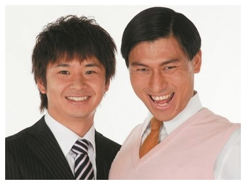
        </div>

        <div class="about_txt">
          <p>春日俊彰と若林正恭による2人組のお笑いコンビ</p>
          <br>
          <p>
            ポンコツだが、華のある生粋のスター春日。<br>
            地味だが、マルチな活躍を見せる実力派若林。
          </p>
          
          <p>
            M1準優勝後のブームが終わっても、<br>
            一部のラジオリスナー(通称リトルトゥース)に根強い人気を誇る。
          </p>

          <p>
            昨年、武道館ライブの成功。そして2人揃って、結婚を果たす。<br>
            公私ともに、勢いに乗る二人がお笑い界の天下を取る日は<br>
            近いかもしれないし、近くないのかもしれない。
          </p>
        </div>
      </div>
        <!-- 画像を４つ並べる -->
        <!-- 画像を並び替える -->
      <!-- テキストボタンの場合 -->

     </div>

      <div class="Point">
        <div class="sub_title">
          <h2 id="POINT" class="animated heartBeat infinite">Point</h2>
          <p>
            オードリーのここがすごい！
            <br>
            おすすめポイントをまとめてみました。
          </p>
        </div>

        <!--  -->
          <!-- 画像とテキストの塊を３セット -->
        
      <div class="Point_box1">
        <div class="Point_box_img">
          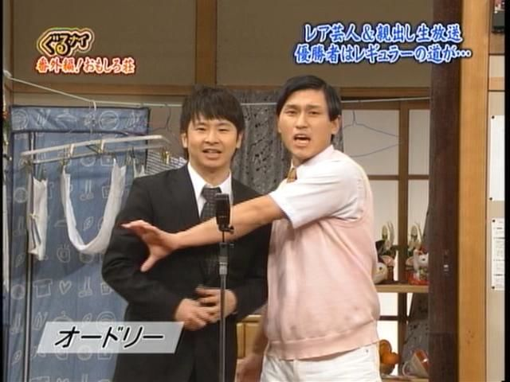
        </div>

          <!-- 画像とテキストの塊① -->
         <div class="Point_box">
          <div class="Point_box_txt_right">
            <h2 class="animated bounceInRight infinite slower" id="raster1">ストーリーが熱い</h2>
            <p>
              だれも助けてくれなかった。でもこの方法しかなかった。<br>
              この漫才が受け入れられなかったら死のうと思った。<br>
              家も追い出された。何度も解散しようと思った。<br>
              そのたびに何故か泣いて引き止めるのは春日だった。<br>
              コツコツ頑張って少しずつ露出が増えてきた。<br>
              どんずまって地球割れろと思った。春日はK-1に挑戦した。<br>
              ある日おもしろ荘に出ることになった。<br>
              運命の歯車は回り始めた。(若林正恭/どろだんご日記)
            </p>
          </div>
        </div> 
      </div>
        
        <!-- 画像とテキストの塊② -->
      <div class="Point_box2">
          <div class="Point_box_img">
           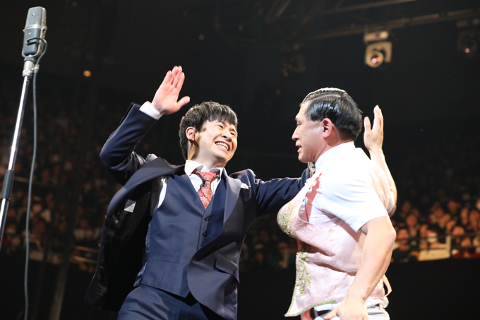
          </div>

          <div class="Point_box">
            <div class="Point_box_txt_left">
              <h2 class="animated fadeInLeftBig infinite slower" id="raster2">フリートークが面白い</h2>
              <p>
                話が上手いのは勿論だが、<br>
                話がつまらなくても成立させてしまうのが、すごいところ。<br>
                2人の何気ないお喋りをファンは聞きたいのだと思う。<br>
                毎週土曜日深夜のオードリーのオールナイトニッポン、<br>
                あなたも聞いてみては？<br>
              </p>
            </div>
          </div>
      </div>
        
        <!-- 画像とテキストの塊③ -->
      <div class="Point_box3">
         <div class="Point_box_img">
              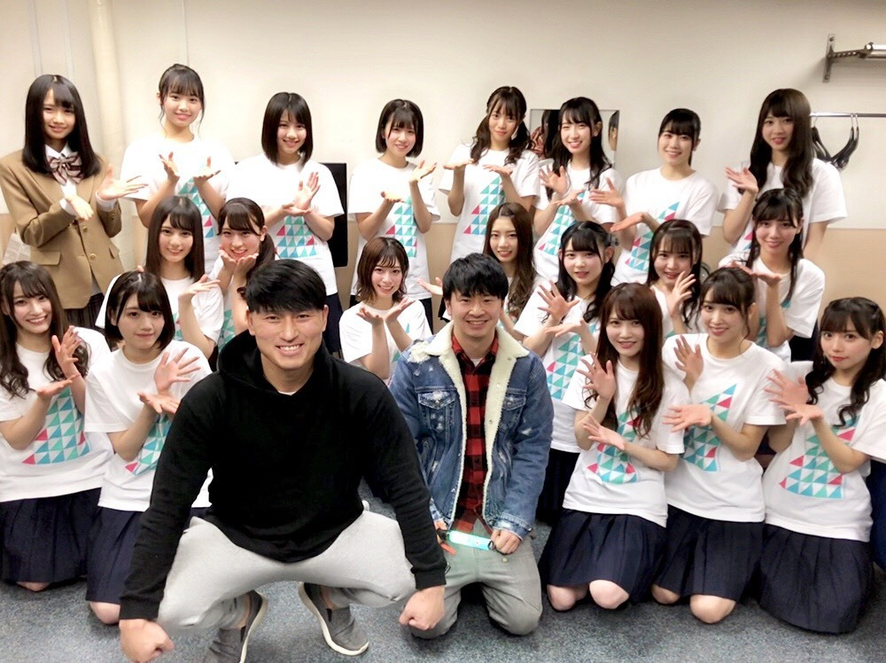    
         </div>

         <div class="Point_box">
          <div class="Point_box_txt_right">
            <h2 class="animated flipInX infinite slower" id="raster3">日向坂46のMCをやってくれている</h2>
            <p>
                日曜深夜にテレビ東京で放送中の「日向坂で会いましょう」<br>
                バラエティに前向きなメンバーが多いと言われる日向坂46。<br>
                前向きにバラエティに取り組む土壌を整えたのは、<br>
                紛れもなくオードリーのおかげでしょう。<br>
                日向坂メンバーとの掛け合いを見て笑わせてもらってます。<br>
                毎週30分が1週間の元気の源です。(東京在住 26歳男性)。
            </p>
          </div>
        </div>
      </div>

      <div class="gag">
        <div class="sub_title">
          <h2 id="gag" class="animated bounceInRight infinite">GAG</h2>
          <p>
            画像をクリックすると、ギャグを披露してくれます。<br>
            ボケ芸人ランキング10位である春日の渾身のギャグをどうぞ。
          </p>
        </div>
      
        <audio id="sound-1" preload="auto">
          <source src="../kasuga_tanaka_19/mp3/tooth_cut.mp3" type="audio/mp3">
        </audio>
        
        <audio id="sound-2" preload="auto">
          <source src="../kasuga_tanaka_19/mp3/apa_cut.mp3" type="audio/mp3">
        </audio>
        
        <audio id="sound-3" preload="auto">
          <source src="../kasuga_tanaka_19/mp3/onigawara_cut.mp3" type="audio/mp3">
        </audio>
      
        <audio id="sound-4" preload="auto">
          <source src="../kasuga_tanaka_19/mp3/kasudance_cut.mp3" type="audio/mp3">
        </audio>
      
        <div class="gag_box_img" >
          <div class="box_img" onclick="soundbell(1)" alt="トゥース">
                      
          </div>
      
          <div class="box_img" onclick="soundbell(2)" alt="アパー">
            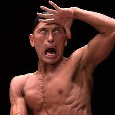
            </div>
      
          <div class="box_img"  onclick="soundbell(3)" alt="鬼瓦">
            
          </div>
      
          <div class="box_img"  onclick="soundbell(4)" alt="カスカスダンス">
            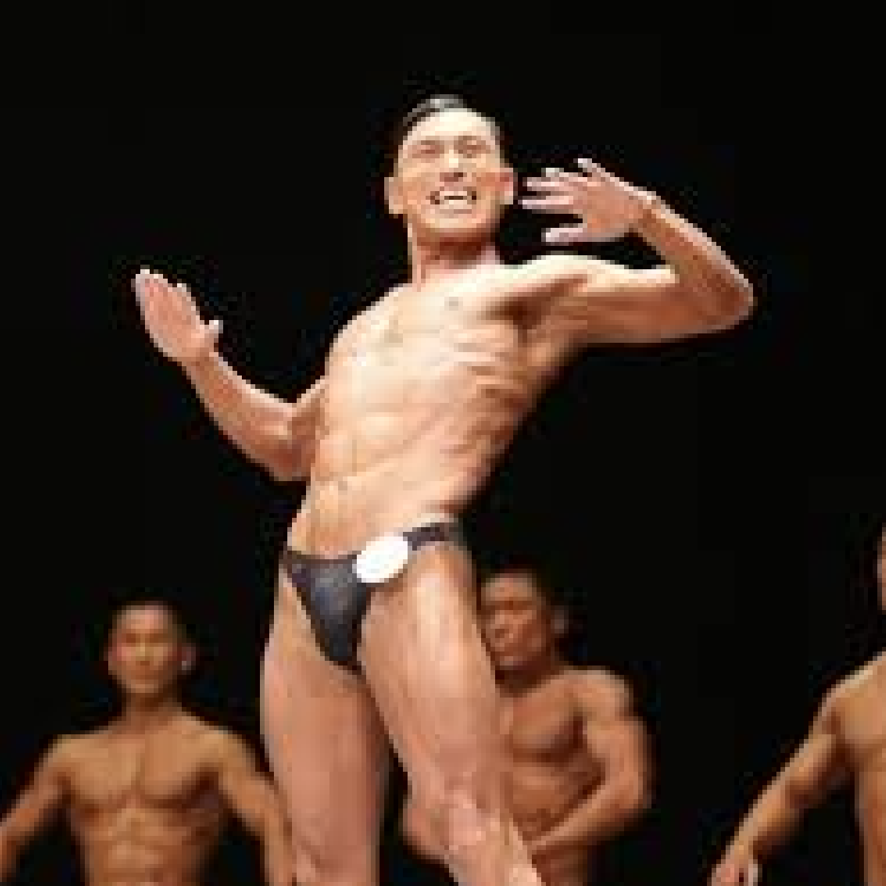
        </div>  
      </div> 

      <div class="prenews">
        <div class="sub_title">
          <h2 id="NEWS" class="animated fadeIn infinite">NEWS</h2>
          <p class="animated fadeIn infinite slow">ニュース</p>
        </div>
      </div>

      <!-- slider-pro実装 -->
      <div class="slider-pro" id="slider1">
        <div class="sp-slides">
            <!-- Slide 1 -->
            <div class="sp-slide" alt="M1準優勝">
              <a href="news.html#news_box1">
                
              </a>
            </div>
            <!-- Slide 2 -->
            <div class="sp-slide" alt="ヒルナンデス椅子破壊">
              <a href="news.html#news_box2">
                
              </a>
            </div>
            <!-- Slide 3 -->
            <div class="sp-slide" alt="若林熱愛報道">
              <a href="news.html#news_box3">
                
              </a>
            </div>
            <!-- Slide 4 -->
            <div class="sp-slide" alt="ひらがな推しMC就任">
              <a href="news.html#news_box4">
                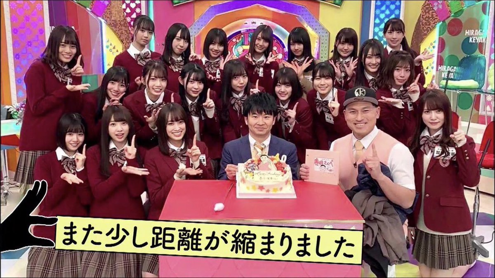
              </a>
            </div>
            <!-- Slide 5 -->
            <div class="sp-slide" alt="若林破局">
              <a href="news.html#news_box5">
                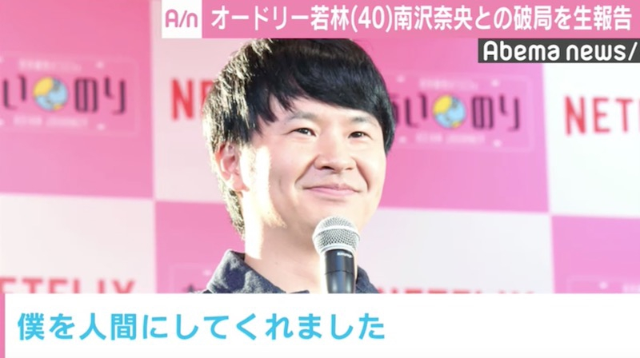
              </a>
            </div>
            <!-- Slide 6 -->
            <div class="sp-slide" alt="春日モニタリングプロポーズ">
              <a href="news.html#news_box6">
                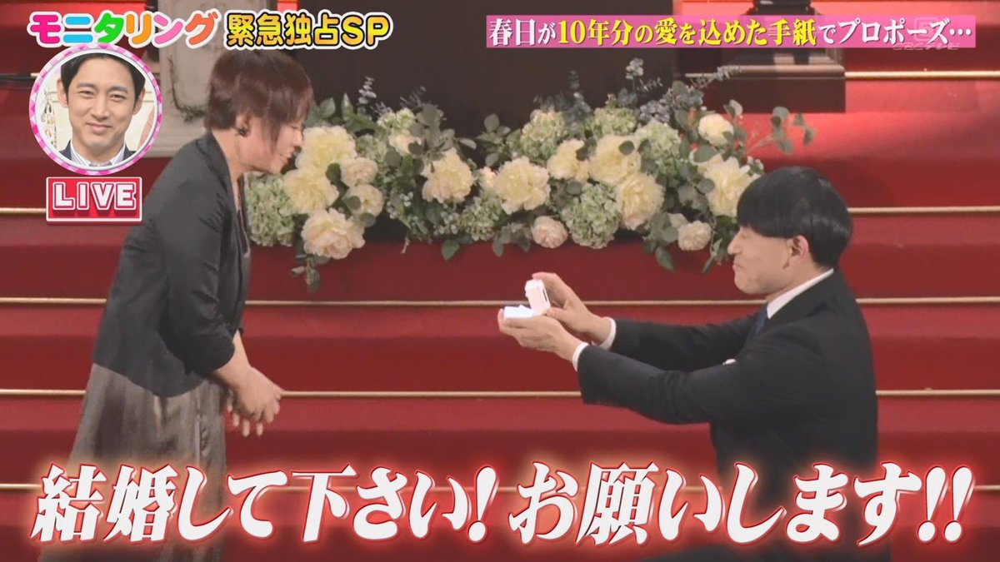
              </a>
            </div>

            <!-- Slide 7 -->
            <div class="sp-slide" alt="春日FRIDAY">
              <a href="news.html#news_box7">
                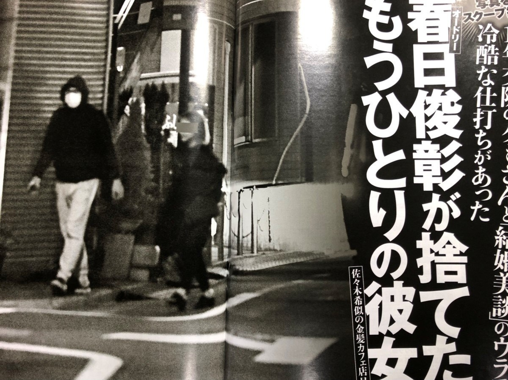
              </a>
            </div>  

            <!-- Slide 8 -->
            <div class="sp-slide" alt="武道館ライブ">
              <a href="news.html#news_box8">
               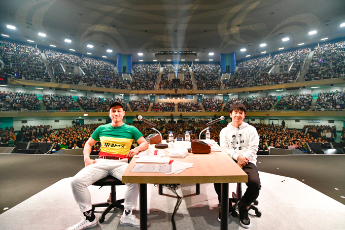
              </a>
            </div>  
            
            <!-- Slide 9 -->
            <div class="sp-slide" alt="若林結婚">
              <a href="news.html#news_box9">
               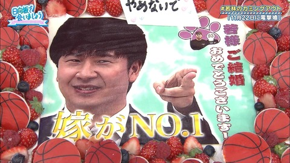
              </a>
            </div>  

        </div>
    </div>
        <div class="btn_align">
         <a href="news.html" class="btn-square">More</a>
        </div> 


      <div class="Access">
        <div class="sub_title">
          <h2 id="ACCESS" class="animated fadeInUp infinite">Access</h2>
          <p class="animated fadeInUp infinite">聖地巡礼について</p>
        </div>

        <!-- goole mapの挿入 -->
        <div class="google_map"> 
          <iframe src="https://www.google.com/maps/embed?pb=!1m14!1m8!1m3!1d12959.927261837667!2d139.6424455!3d35.7020651!3m2!1i1024!2i768!4f13.1!3m3!1m2!1s0x0%3A0x1bd6921fab9748f0!2z44KA44Gk44G_6I2Y!5e0!3m2!1sja!2sjp!4v1587930276551!5m2!1sja!2sjp" width="600" height="450" frameborder="0" style="border:0;" allowfullscreen="" aria-hidden="false" tabindex="0">
          </iframe>
        </div>

        <div class="Access_box" >
          <p>旧春日邸 むつみ荘</p>
          <p>所在地 〒166-0004 東京都杉並区阿佐谷南１丁目２５−２４</p>
          <p>TEL 03-xxxx-xxxx</p>
          <p>kw@allnightnippon.com </p>
        </div>


   <!-- 問い合わせフォームを作成 -->
      <div class="Audition">
          <div class="sub_title">
            <h2 id="AUDITION"  class="animated rotateInDownLeft
            infinite slower">Audition</h2>
            <p>【来世】春日の嫁募集オーディション</p>
          </div>

          <div class="video">
            <iframe width="600" height="360" src="https://www.youtube.com/embed/YvME902BzWk" frameborder="0" allow="accelerometer; autoplay; encrypted-media; gyroscope; picture-in-picture" allowfullscreen></iframe>
          </div>
        
        <div class="Audition_box">
          <p>
            皆さん、夢でお会いして以来ですね。
            <br>
            この度、春日は満を持して、春日の嫁募集オーディションを開催します！
          </p>
          <p>
            ※春日は既婚者です。一生を誓った妻がいます。<br>
            現世の春日目当ての方はご遠慮くださいませ。<br>
            (エントリー料は、３,000円です。)
          </p>
        </div>

        <table class="form-table">
          <tbody>
            <tr>
              <th>名前</th>
              <td class="no_border"><input type="text" name="name" size="60" value="" placeholder="山田太郎">
              </td>
            </tr>

            <tr>
              <th>カナ</th>
              <td class="no_border"><input type="text" name="name" size="60" value="" placeholder="ヤマダタロウ">
              </td>
            </tr>

            <tr>
              <th>メールアドレス</th>
              <td class="no_border"><input type="text" name="email" size="60" value="" placeholder="sample@sample.jp">
              </td>
            </tr>
            <tr>
              <th>オーディションを<br>
                知ったきっかけ
              </th>
              
              <td>
                <select size="1" name="chance">
                  <option value="選択肢1">オールナイトニッポンを聴いていて</option>
                  <option value="選択肢2">SNS</option>
                  <option value="選択肢3">テレビ番組を観て</option>
                  <option value="選択肢4">その他</option>
                </select>
              </td>
            </tr>

            <tr>
              <th>志望動機</th>
              <td>
                <div class="checkbox">
                  <label>
                    <input type="checkbox" name="checkbox[]" class="checkbox_input">
                    <span class="checkbox_parts">春日の器に惹かれた</span>
                  </label><br>
                  <label>
                    <input type="checkbox" name="checkbox[]" class="checkbox_input">
                    <span class="checkbox_parts">春日の面白さに惹かれた</span>
                  </label><br>
                  <label>
                    <input type="checkbox" name="checkbox[]" class="checkbox_input">
                    <span class="checkbox_parts">春日の真面目さに惹かれた</span>
                  </label><br>
                  <label>
                    <input type="checkbox" name="checkbox[]" class="checkbox_input">
                    <span class="checkbox_parts">春日の倹約家の精神に惹かれた</span>
                  </label>
              </div>
             </td>
            </tr>

            <tr>
              <th>詳細</th>
              <td>
                <textarea name="content" cols="30" rows="10" placeholder="熱い意気込みをどうぞ！春日の自尊心をくすぐるコメントは加点されます。"></textarea>
              </td>
            </tr>
          </tbody>
        </table>


        <audio id="sound-5" preload="auto">
          <source src="../kasuga_tanaka_19/mp3/raise_cut.mp3" type="audio/mp3">
        </audio>

        <div>
          <div>
            <div class="btn_align2" onclick="soundbell(5)" alt="来世でお会いしましょう">
              <a class="btn-square">来世でお会いしましょう</a>
            </div> 
          </div>
      </div>
   </div>


    <!-- /.content -->

  </div>
    <div id="footer">
      <p>copyrights 2020 Little Tooth Channel All RIghts Reserved.</p>
    </div>
    <!-- /#footer -->


  <!-- ここから上にコードを書く -->
  <!-- この中に記述していく -->
</body>

</html>